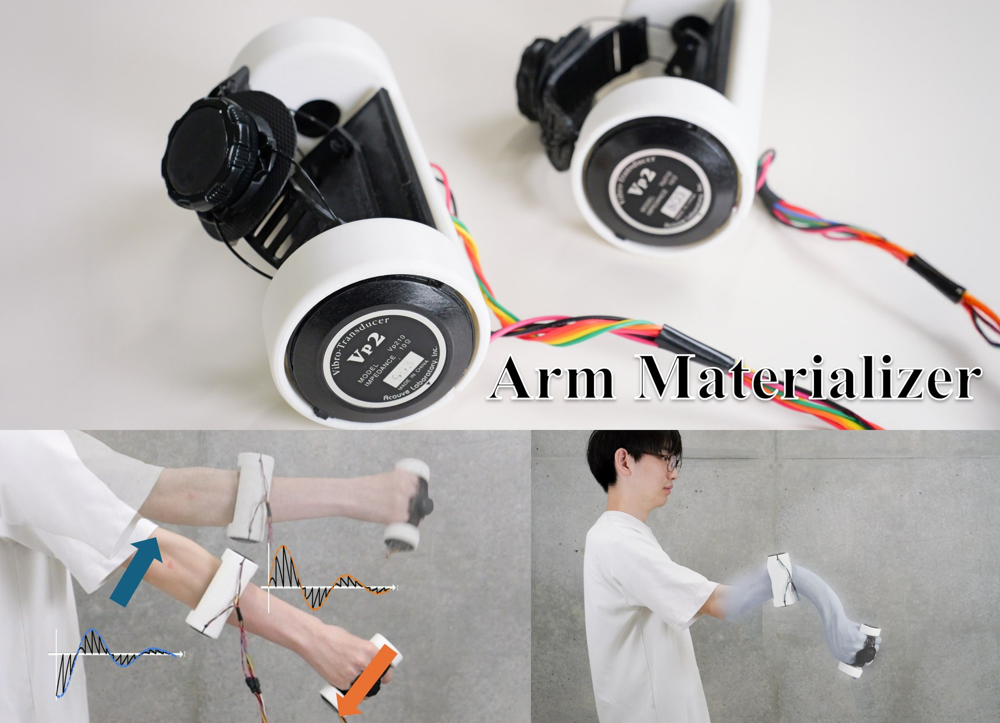
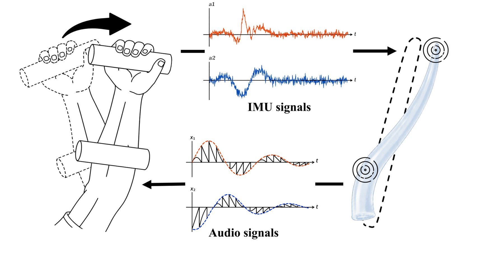
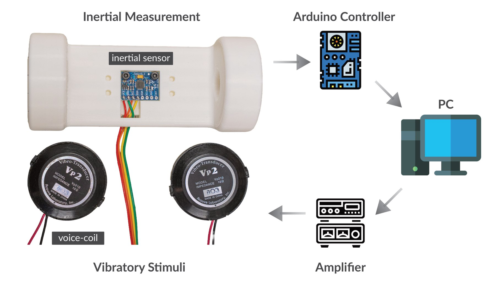

Arm Materializer
— Dynamic Pseudo-Attraction for Modulating Perceived Arm Material

Abstract
The human body is not simply rigid. Its viscoelastic properties contribute to material qualities perceived through movement, which can be important for conceptualizing movement and embodying avatars with different material characteristics. We propose Arm Materializer, a wearable haptic system that induces viscoelastic deformation sensations in the arm using motion-coupled pseudoattraction. The system forms a closed loop between the user’s arm motion and haptic feedback. Arm motion drives a simulation of viscoelastic deformation, and the simulated response is presented back to the arm as pseudo-attraction forces at two locations. Preliminary demonstrations suggest that the system can modulate perceived deformation dynamics and material qualities of the arm. In the demonstration, users can explore these sensations through both VR and real-space interactions.


